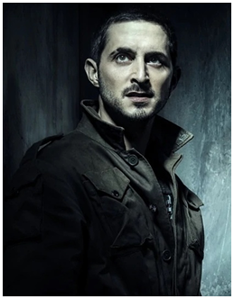
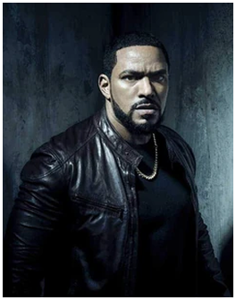
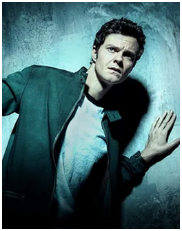
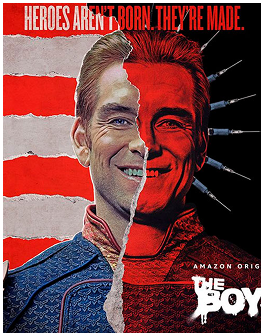

“William J. Butcher” ou mais conhecido como “Billy Butcher” ou “Billy Bruto” em português, é líder de “The Boys”, um grupo de pesoas que despreza todas as pessoas superpoderosas do mundo, o grupo é formado por “Hughie”, “Leitinho de mãe”,”Francês” e “Kimiko” que observam, registram e, às vezes, elimina super-heróis criados artificialmente pela empresa “Vought”. Ele é o arqui-inimigo de “Capitão pátria” culpado pelo estupro de sua esposa “Becky”.
Kimiko Miyashiro:
“Kimiko Miyashiro” ou também conhecida como “fêmea” nos quadrinhos, é uma das integrantes do grupo The boys um membro mudo e selvagem com força e resistência aprimorada e cura regenerativa. Injetada involuntariamente com o Composto V como parte de um esquema para criar terroristas superpoderosos.

Frenchie:
“Frenchie" ou em português "Francês/Serge" é um dos integrantes do grupo The boys é um mercenário especializado em munições, ordenanças, infiltrações e comunicações além de ciências e química.Francês tem uma tendência a não seguir os planos da equipe, o que o coloca em repetidos conflitos com o "Leitinho de mãe".

Leitinho de mãe:
“Mother's milk" ou em português "Leitinho de mãe" é um dos membros dos The boys responsável pela organização e planejamento das operações dos vigilantes. Ele promete continuamente deixar o grupo para a segurança de sua família, em parte devido a seus frequentes confrontos com Francês.

Hughie Campbell:
“Hughie Campbell” membro dos The boys que se junta após a sua namorada "Robin" ser por um dos super conhecido como "trem Bala", ele é conhecido nos quadrinhos como "“Hughie mijão" por ser o membro mais medroso dos The boys

Capitão pátria:
"Capitão pátria" é o lider psicopata, narcisista e extremamente poderoso dos sete, um grupo de "super-heróis" mas que, na verdade, agem mais como vilões do que como herois, Por trás de sua imagem pública de herói nobre, o Capitão Pátria abusa imprudentemente de seus poderes para ganho pessoal e se importa pouco com o bem-estar daqueles que ele afirma proteger. Capitão pátria tem varios poderes, algum deles são força sobre-humana, velocidade, voo, visão de raio-X e de calor, e quase invulnerabilidade.